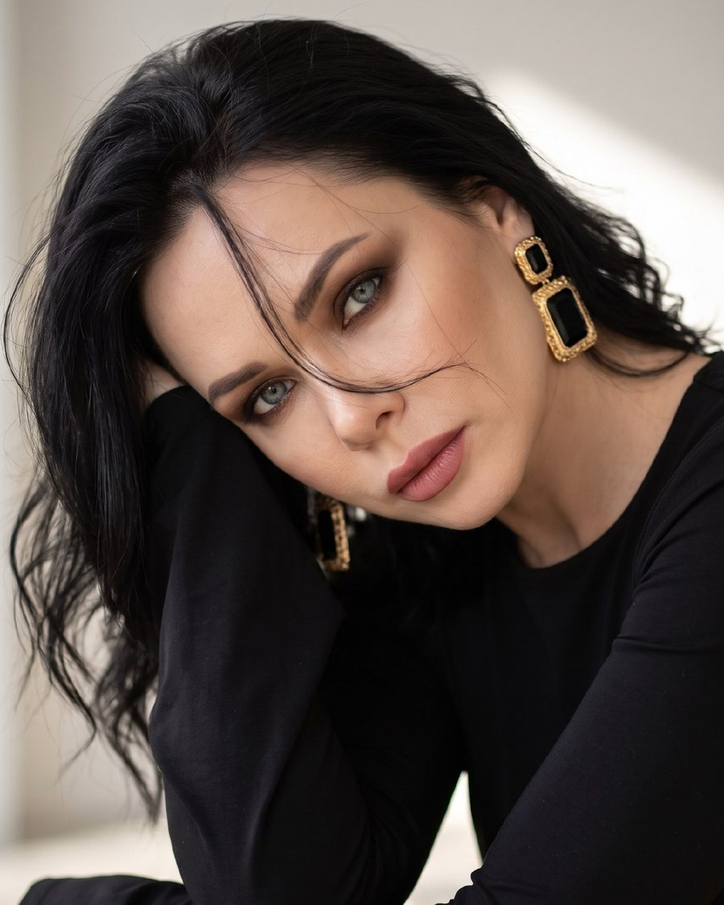

Таро-ориентир на 2027 год
Не прогноз, а опора для решений. Индивидуальный расклад на год, который показывает, где Вам стоит действовать, а где дать себе паузу.
Выбрать форматКогда это особенно нужно
Перед новым годом хочется не гадать «что будет», а понять, как выстроить свой год. С этим ко мне приходят чаще всего.
- ОтношенияКак строить близость и границы, чтобы в этом году стало спокойнее и теплее.
- ДеньгиНа что опереться в финансовых решениях и какой шаг сделать первым.
- РеализацияКуда направить силы, если хочется своего дела, роста или перемен.
Что Вы получаете
- Главные темы годаКакие сферы выйдут на первый план и на что в них опираться.
- Периоды активности и паузыКогда лучше действовать смелее, а когда беречь ресурс.
- Подсказки под Ваш запросКак поступить в Вашей ситуации, чтобы вышло во благо Вам.
- ВидеоразборЯ записываю его лично для Вас, к нему удобно возвращаться в течение года.
Как это делается
Вы присылаете дату рождения и коротко описываете, что для Вас сейчас важнее всего. Я составляю вопросы к раскладу именно под Вас: никаких схем из интернета и общих шаблонов. Затем записываю видеоразбор и присылаю его Вам в удобный мессенджер.
Время и место рождения не нужны.
Чем это отличается от общего гороскопа
Общий прогноз
Один текст для миллионов людей. Интересно прочитать, но трудно понять, что из этого про Вас.
Личный расклад
Только Ваш запрос и Ваша ситуация. Итог: понятный ответ на вопрос, что делать.
Обо мне

Меня зовут Жанна. Я таролог с практикой более семи лет. Помогаю разобраться в ситуации, принять решение и найти опору внутри. Мои клиенты говорят, что после расклада становится спокойнее и яснее видно, что происходит со стороны.
Я не делаю предсказаний. Я смотрю, какой путь будет наиболее благоприятным именно для Вас.
Форматы и стоимость
Краткий
- Расклад на год по одному Вашему запросу
- Главные темы и ключевые периоды
- Видеоразбор
Полный
- Всё, что входит в краткий
- Разбор по кварталам года
- Отдельный акцент на Ваших личных планах
- Видеоразбор подробнее
После выбора формата напишите мне в удобном для Вас мессенджере: договоримся об оплате и запросе.
Что важно знать до покупки
Частые вопросы
Что нужно для расклада?
Дата рождения и Ваш запрос: отношения, деньги, реализация или другая тема.
Как я получу разбор?
В мессенджере, который Вам удобен: Телеграм, ВКонтакте или MAX. Это видеосообщение, сроки мы обсудим при заказе.
Чем краткий формат отличается от полного?
В полном добавляется разбор по кварталам и отдельный акцент на Ваших планах.
Можно ли выбрать одну тему?
Да. Укажите, что для Вас важнее всего, и расклад будет построен вокруг этого.
Войдите в 2027 год с ясностью
Выберите удобный способ связи и напишите мне. Я отвечу лично.